|
| Soluce
Goldeneye : Archives |
Un
de mes Niveaux Préferés. De nombreux couloirs, un Décor
sympathique, et une ambiance comparable à celle de Facility.
|
| Se
sauver de la Salle d'Interrogatoire : Tous Niveaux |
Du gateau. Evidemment, certains seront tentés de choper le PP7 et son Chargeur sur la table. Que nenni ! Frappez plutot les 2 Gardes. Celui de droite à la Clé de la Salle, vous permettant de prendre la Poudre d'Escampette tranquillement. Une fois la 1ere Partie nettoyée, vous arriverez dans la 2eme Partie, celle avec la Grande Salle. Occupez-vous des Gardes, puis prenez vers la gauche. |
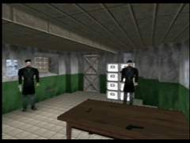

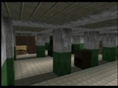
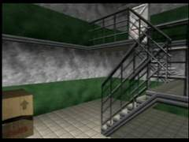

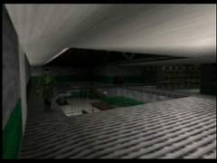
Vous pouvez prendre la Double Porte, ou celle tout au fond, près de l'escalier. Ce qui compte, c'est d'arriver devant la Porte de la Salle ou est Natalya. Vous pouvez aussi casser une des vitres pas loin, au cas ou vous etes en Agent. Ce sera plus facile pour se sauver après par exemple, plutot que de se taper un détour... |


| Sauver
Natalya : Tous Niveaux |
Quand vous voyez la Petite Porte devant vous, c'est là qu'est Natalya. Vous n'avez pas besoin de tuer les Gardes dans cette Salle. Faites en sorte que Natalya vous voie et ce sera bon, vous pouvez décamper. Par contre, si vous tuez les gardes et faites du raffut, Natalya va prendre peur et se sauver. Il faudra alors la chercher dans le Grenier. Si vous etes en Agent, tracez vers la Vitre que vous aurez cassé auparavant. Sinon, direction Mishkin, pour un autre Objectif. |
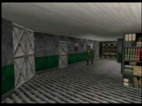
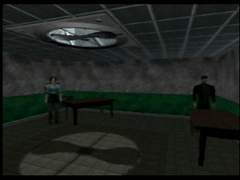
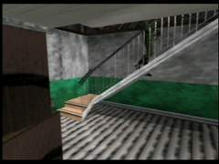
| Récuperer
la Boite Noire : Secret Agent / 00 Agent |
Une fois que Natalya vous a vu, tracez vers l'Escalier qui descend dans la Grande Salle. Prenez la Porte sur votre Droite (Attention, elle s'ouvre sur la Droite) et prenez ensuite à Gauche. Devant vous, vous verrez une autre Porte, donnant dans un Couloir avec de la Lumière qui Filtre. Ouvrez la Porte de gauche, voilà Mishkin. |

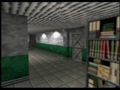
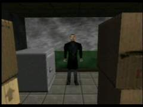
Mishkin va se mettre à vous parler (c'est long...) et vous remettra la Clé pour ouvrir le Coffre, où se trouve la Boite Noire. Note - Attention aux Gardes qui vous auraient suivi, et qui risquent de foutre un Boxon terrible avec des Grenades par exemple. Si vous tirez sur un Garde, Mishkin sortira un Dostovei et vous agressera ! Un passage crispant. Après, ressortez par l'autre Porte de cette Salle. Continuez toujours tout droit, et vous verrez des vitres. Cassez-les pour se sauver avec Natalya. |
| Se
Sauver avec Natalya : Tous Niveaux |
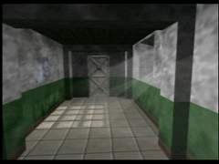
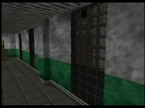
Brisez la Vitre et vous avez réussi la Mission !